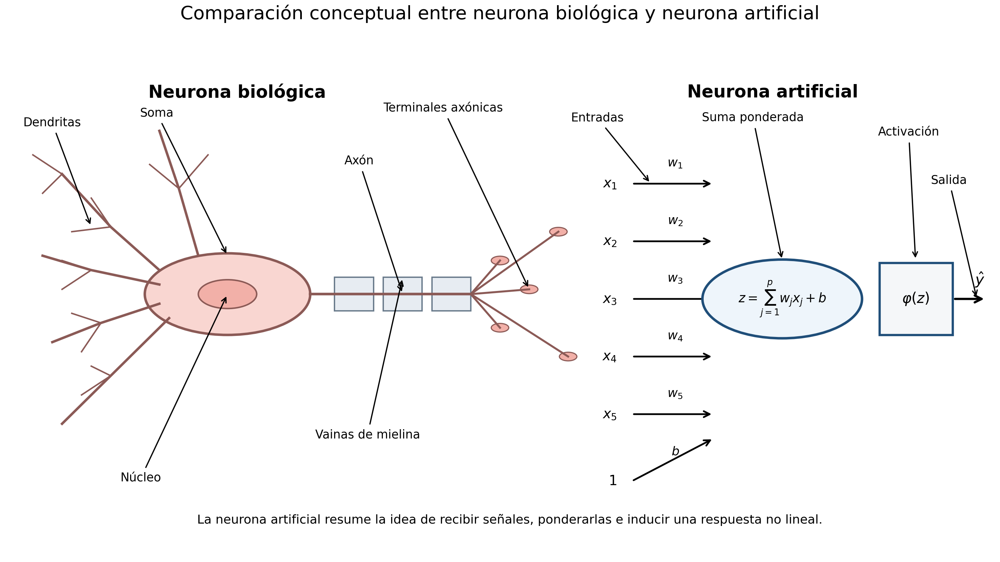
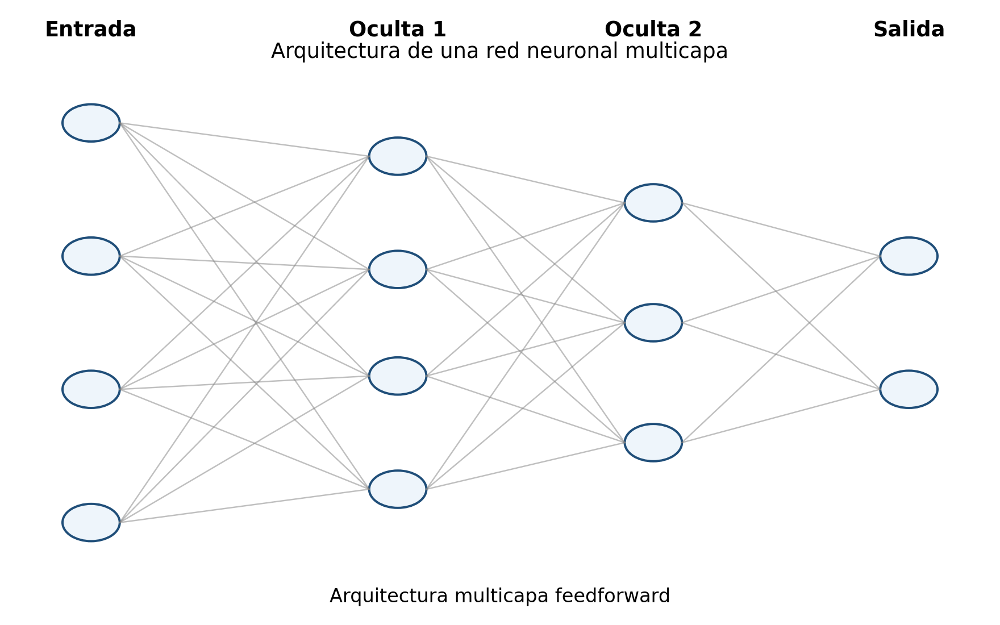

Las redes neuronales artificiales son modelos de aprendizaje supervisado y no supervisado formados por unidades computacionales simples organizadas en capas. Cada unidad combina linealmente sus entradas, aplica una función de activación y transmite el resultado a la siguiente capa.
Su poder proviene de la composición de múltiples transformaciones no lineales. Mientras un modelo lineal representa fronteras planas, una red profunda puede aproximar funciones altamente complejas, extraer representaciones internas y modelar interacciones de gran orden.
En este capítulo se desarrolla la formulación matemática de la neurona artificial, el perceptrón, las redes multicapa, la propagación hacia adelante, las funciones de pérdida, la retropropagación y los métodos de optimización utilizados para entrenarlas.
ImportanteDefinición esencial
Una red neuronal compone transformaciones afines y activaciones no lineales.
Objetivos
Al finalizar el capítulo, el lector podrá:
formular una neurona artificial;
interpretar pesos, sesgo y activación;
comprender el perceptrón;
distinguir funciones de activación;
representar una red multicapa;
realizar propagación hacia adelante;
definir pérdidas para clasificación y regresión;
derivar gradientes mediante regla de la cadena;
comprender retropropagación;
analizar descenso por gradiente y mini-lotes;
identificar problemas de gradientes desvanecientes y explosivos;
interpretar regularización y dropout;
comprender normalización por lotes;
analizar inicialización de pesos;
relacionar profundidad, capacidad y generalización;
conectar redes neuronales con regresión logística y aprendizaje profundo.
\[
b
\leftarrow
b
+
\eta
\left(
y_i-\widehat{y}_i
\right),
\]
donde \(\eta>0\) es la tasa de aprendizaje.
Limitación del perceptrón
El perceptrón converge si las clases son linealmente separables. No puede resolver problemas como XOR mediante una sola capa lineal.
Esta limitación motivó el uso de capas ocultas y activaciones no lineales.
ImportanteNecesidad de no linealidad
Si todas las activaciones fueran lineales, la composición de múltiples capas sería equivalente a una sola transformación lineal. La capacidad no lineal proviene de las funciones de activación.

Figura 19.1: La comparación entre neurona biológica y neurona artificial muestra con mayor claridad la analogía entre recepción de señales, integración y producción de una respuesta.
La retropropagación calcula gradientes eficientemente. El optimizador —SGD, momentum, Adam u otro— utiliza esos gradientes para actualizar los parámetros.

Figura 19.2: Una red neuronal multicapa transforma entradas en salidas mediante capas ocultas y activaciones no lineales.
NotaLectura conceptual de la figura
En la neurona biológica, las dendritas reciben señales, el soma las integra y el axón transmite la respuesta.
En la neurona artificial, las entradas se ponderan, se suman con un sesgo y luego se transforman mediante una función de activación para producir la salida.
Retropropagación
Definición 19.1 La retropropagación es un algoritmo eficiente para calcular los gradientes de la pérdida respecto de todos los parámetros mediante la regla de la cadena.
Favorece pesos exactamente cero, aunque es menos común que L2.
NotaDropout durante entrenamiento y predicción
Dropout introduce máscaras aleatorias durante entrenamiento. En inferencia se utiliza la red completa con el escalamiento correspondiente; no deben eliminarse neuronas aleatoriamente en una predicción ordinaria.
Dropout
Durante entrenamiento, cada activación puede eliminarse aleatoriamente.
Sea
\[
m_j
\sim
Bernoulli(q),
\]
donde \(q\) es la probabilidad de retención.
La activación modificada es
\[
\widetilde{a}_j
=
\frac{m_j}{q}a_j.
\]
Durante predicción no se eliminan unidades.
Interpretación de dropout
Dropout:
reduce coadaptación;
introduce ruido;
actúa como regularización;
puede interpretarse como aproximación a un ensamble de subredes.
Una red con demasiada capacidad puede memorizar la muestra.
AdvertenciaAlcance del teorema universal
El teorema garantiza capacidad de aproximación bajo determinadas condiciones, pero no asegura entrenamiento eficiente, buena generalización ni una arquitectura pequeña (Hornik et al. 1989).
La historia formal de las neuronas artificiales parte de McCulloch y Pitts (1943) y del perceptrón de Rosenblatt (1958). Las arquitecturas profundas modernas se analizan en Goodfellow et al. (2016), mientras que Rumelhart et al. (1986) explicó la retropropagación de manera operativa.
Teorema de aproximación universal
Bajo condiciones adecuadas, una red con una capa oculta y suficientes unidades puede aproximar arbitrariamente bien funciones continuas sobre conjuntos compactos.
Este resultado no garantiza:
entrenamiento eficiente;
buena generalización;
número razonable de unidades;
estabilidad numérica.
Profundidad frente a anchura
Una red ancha puede aproximar muchas funciones, pero una red profunda puede representar ciertas estructuras con menos unidades.
La profundidad permite reutilizar composiciones jerárquicas.
Interpretación probabilística
En clasificación binaria, una salida sigmoidal puede interpretarse como
\[
\widehat{P}
(Y=1\mid\mathbf{x}).
\]
En clasificación multiclase, softmax produce
\[
\widehat{P}
(Y=c\mid\mathbf{x}).
\]
Estas probabilidades pueden necesitar calibración.
Algoritmo Retropropagación con descenso por gradienteEntrada: D = {(x_i, y_i)}_{i=1}^n, arquitectura de red, tasa ηSalida: parámetros Θ = {W^{(\ell)}, b^{(\ell)}}_{\ell=1}^L1. Inicializar aleatoriamente Θ.2. Repetir hasta convergencia: Para cada par (x_i, y_i): a) Propagación hacia adelante: a^{(0)} = x_i, z^{(\ell)} = W^{(\ell)} a^{(\ell-1)} + b^{(\ell)}, a^{(\ell)} = φ^{(\ell)}(z^{(\ell)}), \ell=1,...,L. b) Calcular la pérdida \mathcal{L}(y_i, a^{(L)}). c) Propagación hacia atrás: δ^{(L)} = ∇_{a^{(L)}}\mathcal{L} \odot φ'^{(L)}(z^{(L)}), δ^{(\ell)} = ((W^{(\ell+1)})^T δ^{(\ell+1)}) \odot φ'^{(\ell)}(z^{(\ell)}). d) Actualizar: W^{(\ell)} ← W^{(\ell)} - η δ^{(\ell)} (a^{(\ell-1)})^T, b^{(\ell)} ← b^{(\ell)} - η δ^{(\ell)}.3. Devolver la red entrenada.
Ventajas
gran capacidad de aproximación;
aprendizaje automático de representaciones;
manejo de relaciones no lineales;
adaptación a datos estructurados y no estructurados;
flexibilidad arquitectónica;
predicción rápida después del entrenamiento.
Limitaciones
entrenamiento costoso;
numerosos hiperparámetros;
menor interpretabilidad;
riesgo de sobreajuste;
sensibilidad a inicialización y tasa de aprendizaje;
necesidad frecuente de grandes conjuntos de datos;
optimización no convexa.
Errores frecuentes
no escalar variables;
usar demasiadas capas para pocos datos;
seleccionar épocas con el conjunto de prueba;
omitir validación;
usar una tasa de aprendizaje inadecuada;
confundir salida con probabilidad calibrada;
inicializar todos los pesos igual;
ignorar desbalance de clases;
evaluar únicamente exactitud;
concluir causalidad a partir de pesos o activaciones.
Ejercicios conceptuales
Explique el papel de pesos y sesgo.
¿Por qué una activación no lineal es necesaria?
Compare sigmoidal, tanh y ReLU.
¿Qué diferencia existe entre propagación hacia adelante y retropropagación?
Explique el gradiente desvaneciente.
¿Por qué se usan mini-lotes?
¿Qué función cumple dropout?
Compare inicialización Xavier y He.
¿Qué representa una época?
¿Cómo se relaciona una red sin capa oculta con regresión logística?
Para una neurona sigmoidal con entropía cruzada binaria:
escriba \(z\);
escriba \(\widehat{p}\);
escriba la pérdida;
derive \(\partial L/\partial z\);
derive \(\partial L/\partial w_j\).
Ejercicio aplicado
Se desea clasificar pacientes según riesgo cardiovascular utilizando:
edad;
presión arterial;
colesterol;
glucosa;
frecuencia cardiaca;
índice de masa corporal;
actividad física.
Diseñe una red neuronal que incluya:
arquitectura;
activaciones;
salida;
función de pérdida;
escalamiento;
partición de datos;
mini-lotes;
optimizador;
regularización;
parada temprana;
manejo de desbalance;
sensibilidad y especificidad;
calibración;
comparación con regresión logística, SVM y Random Forest;
limitaciones clínicas.
Resumen
En este capítulo se desarrollaron los fundamentos matemáticos de las redes neuronales artificiales.
Se formuló la neurona artificial, el perceptrón y las redes multicapa. Se estudiaron funciones de activación como sigmoidal, tanh, ReLU y softmax, así como pérdidas para regresión y clasificación.
También se derivó la retropropagación mediante la regla de la cadena, junto con los gradientes respecto de pesos y sesgos. Posteriormente se analizaron descenso por gradiente, mini-lotes, momentum, RMSProp y Adam.
Finalmente, se estudiaron inicialización, regularización, dropout, normalización por lotes, parada temprana, capacidad, aproximación universal, interpretabilidad y conexión con regresión logística, SVM y aprendizaje profundo.
Referencias del capítulo
Los fundamentos se apoyan en McCulloch y Pitts (1943), Rosenblatt (1958), Rumelhart et al. (1986), Hornik et al. (1989), Goodfellow et al. (2016), Glorot y Bengio (2010), He et al. (2015) y Srivastava et al. (2014).
Glorot, Xavier, y Yoshua Bengio. 2010. «Understanding the Difficulty of Training Deep Feedforward Neural Networks». Proceedings of the Thirteenth International Conference on Artificial Intelligence and Statistics, 249-56.
Goodfellow, Ian, Yoshua Bengio, y Aaron Courville. 2016. Deep Learning. MIT Press.
He, Kaiming, Xiangyu Zhang, Shaoqing Ren, y Jian Sun. 2015. «Delving Deep into Rectifiers: Surpassing Human-Level Performance on ImageNet Classification». Proceedings of the IEEE International Conference on Computer Vision, 1026-34. https://doi.org/10.1109/ICCV.2015.123.
Hornik, Kurt, Maxwell Stinchcombe, y Halbert White. 1989. «Multilayer Feedforward Networks Are Universal Approximators». Neural Networks 2 (5): 359-66. https://doi.org/10.1016/0893-6080(89)90020-8.
McCulloch, Warren S., y Walter Pitts. 1943. «A Logical Calculus of the Ideas Immanent in Nervous Activity». The Bulletin of Mathematical Biophysics 5: 115-33. https://doi.org/10.1007/BF02478259.
Rosenblatt, Frank. 1958. «The Perceptron: A Probabilistic Model for Information Storage and Organization in the Brain». Psychological Review 65 (6): 386-408. https://doi.org/10.1037/h0042519.
Rumelhart, David E., Geoffrey E. Hinton, y Ronald J. Williams. 1986. «Learning Representations by Back-Propagating Errors». Nature 323: 533-36. https://doi.org/10.1038/323533a0.
Srivastava, Nitish, Geoffrey Hinton, Alex Krizhevsky, Ilya Sutskever, y Ruslan Salakhutdinov. 2014. «Dropout: A Simple Way to Prevent Neural Networks from Overfitting». Journal of Machine Learning Research 15: 1929-58.
Ejecutar el código
# Redes neuronales\index{Redes neuronales} artificiales {#sec-redes-neuronales}## Introducción {.unnumbered}Las redes neuronales componen transformaciones afines y activaciones no lineales. Su entrenamiento moderno se apoya en retropropagación\index{Retropropagación}, optimización estocástica, inicialización controlada y regularización [@rumelhart1986learning; @glorot2010understanding; @he2015delving; @srivastava2014dropout\index{Dropout}].Las redes neuronales artificiales son modelos de aprendizaje supervisado y no supervisado formados por unidades computacionales simples organizadas en capas. Cada unidad combina linealmente sus entradas, aplica una función de activación y transmite el resultado a la siguiente capa.Su poder proviene de la composición de múltiples transformaciones no lineales. Mientras un modelo lineal representa fronteras planas, una red profunda puede aproximar funciones altamente complejas, extraer representaciones internas y modelar interacciones de gran orden.En este capítulo se desarrolla la formulación matemática de la neurona artificial, el perceptrón, las redes multicapa, la propagación hacia adelante, las funciones de pérdida, la retropropagación y los métodos de optimización utilizados para entrenarlas.::: {.callout-important title="Definición esencial" appearance="default" icon="true"}Una red neuronal compone transformaciones afines y activaciones no lineales.:::## Objetivos {.unnumbered}Al finalizar el capítulo, el lector podrá:1. formular una neurona artificial;2. interpretar pesos, sesgo y activación;3. comprender el perceptrón;4. distinguir funciones de activación;5. representar una red multicapa;6. realizar propagación hacia adelante;7. definir pérdidas para clasificación y regresión;8. derivar gradientes mediante regla de la cadena;9. comprender retropropagación;10. analizar descenso por gradiente y mini-lotes;11. identificar problemas de gradientes desvanecientes y explosivos;12. interpretar regularización y dropout;13. comprender normalización por lotes;14. analizar inicialización de pesos;15. relacionar profundidad, capacidad y generalización;16. conectar redes neuronales con regresión logística y aprendizaje profundo.## Neurona artificial {.unnumbered}Una neurona recibe un vector de entrada$$\mathbf{x}=\begin{pmatrix}x_1\\\vdots\\x_p\end{pmatrix}\in\mathbb{R}^{p},$$un vector de pesos$$\mathbf{w}=\begin{pmatrix}w_1\\\vdots\\w_p\end{pmatrix},$$y un sesgo$$b\in\mathbb{R}.$$Primero calcula la combinación lineal$$z=\mathbf{w}^{\mathsf T}\mathbf{x}+b.$$Después aplica una función de activación $\phi$:$$a=\phi(z).$$## Interpretación de los pesos {.unnumbered}Cada peso $w_j$ controla la influencia de la característica $x_j$.- si $w_j>0$, aumentar $x_j$ tiende a aumentar $z$;- si $w_j<0$, aumentar $x_j$ tiende a disminuir $z$;- si $|w_j|$ es grande, la influencia local es mayor.El sesgo desplaza el umbral de activación.## Perceptrón {.unnumbered}El perceptrón utiliza la función escalón:$$\phi(z)=\begin{cases}1, & z\geq 0,\\0, & z<0.\end{cases}$$La predicción es$$\widehat{y}=\phi\left(\mathbf{w}^{\mathsf T}\mathbf{x}+b\right).$$## Frontera del perceptrón {.unnumbered}La frontera de decisión es$$\mathbf{w}^{\mathsf T}\mathbf{x}+b=0.$$Por tanto, el perceptrón es un clasificador lineal.## Regla de aprendizaje del perceptrón {.unnumbered}Para una observación $(\mathbf{x}_i,y_i)$, una actualización simple es$$\mathbf{w}\leftarrow\mathbf{w}+\eta\left(y_i-\widehat{y}_i\right)\mathbf{x}_i,$$$$b\leftarrowb+\eta\left(y_i-\widehat{y}_i\right),$$donde $\eta>0$ es la tasa de aprendizaje.## Limitación del perceptrón {.unnumbered}El perceptrón converge si las clases son linealmente separables. No puede resolver problemas como XOR mediante una sola capa lineal.Esta limitación motivó el uso de capas ocultas y activaciones no lineales.::: {.callout-important title="Necesidad de no linealidad" appearance="default" icon="true"}Si todas las activaciones fueran lineales, la composición de múltiples capas sería equivalente a una sola transformación lineal. La capacidad no lineal proviene de las funciones de activación.:::{#fig-neurona-natural-artificial width=84% fig-alt="Comparación de neurona natural y neurona artificial"}## Red multicapa {.unnumbered}Una red multicapa contiene:- capa de entrada;- una o más capas ocultas;- capa de salida.Sea una red con $L$ capas parametrizadas.Para la capa $\ell$:$$\mathbf{z}^{(\ell)}=\mathbf{W}^{(\ell)}\mathbf{a}^{(\ell-1)}+\mathbf{b}^{(\ell)},$$$$\mathbf{a}^{(\ell)}=\phi^{(\ell)}\left(\mathbf{z}^{(\ell)}\right).$$La entrada es$$\mathbf{a}^{(0)}=\mathbf{x}.$$## Dimensiones {.unnumbered}Si la capa $\ell-1$ tiene $n_{\ell-1}$ unidades y la capa $\ell$ tiene $n_\ell$, entonces$$\mathbf{W}^{(\ell)}\in\mathbb{R}^{n_\ell\times n_{\ell-1}},$$$$\mathbf{b}^{(\ell)}\in\mathbb{R}^{n_\ell}.$$## Propagación hacia adelante {.unnumbered}La propagación hacia adelante consiste en calcular secuencialmente:$$\mathbf{a}^{(0)}\to\mathbf{z}^{(1)}\to\mathbf{a}^{(1)}\to\cdots\to\mathbf{z}^{(L)}\to\mathbf{a}^{(L)}.$$La salida de la red es$$\widehat{\mathbf{y}}=\mathbf{a}^{(L)}.$$## Función identidad {.unnumbered}Para regresión puede usarse$$\phi(z)=z.$$La salida no queda restringida.## Función sigmoidal {.unnumbered}$$\sigma(z)=\frac{1}{1+e^{-z}}.$$Su derivada es$$\sigma'(z)=\sigma(z)\left(1-\sigma(z)\right).$$Se utiliza frecuentemente en clasificación binaria.## Tangente hiperbólica {.unnumbered}$$\tanh(z)=\frac{e^z-e^{-z}}{e^z+e^{-z}}.$$Su derivada es$$\frac{d}{dz}\tanh(z)=1-\tanh^2(z).$$Su rango es $(-1,1)$.## ReLU {.unnumbered}La función ReLU es$$\operatorname{ReLU}(z)=\max(0,z).$$Su derivada es$$\operatorname{ReLU}'(z)=\begin{cases}1, & z>0,\\0, & z<0.\end{cases}$$En $z=0$ se utiliza un subgradiente.## Leaky ReLU {.unnumbered}$$\operatorname{LReLU}(z)=\begin{cases}z, & z\geq 0,\\\alpha z, & z<0,\end{cases}$$con $\alpha>0$ pequeño.Reduce el problema de neuronas muertas.## Softmax {.unnumbered}Para clasificación multiclase, si la salida lineal es$$\mathbf{z}=(z_1,\ldots,z_C)^{\mathsf T},$$la probabilidad de la clase $c$ es$$\operatorname{softmax}_c(\mathbf{z})=\frac{e^{z_c}}{\sum_{r=1}^{C}e^{z_r}}.$$Se cumple$$\sum_{c=1}^{C}\operatorname{softmax}_c(\mathbf{z})=1.$$## Estabilidad numérica de softmax {.unnumbered}Para evitar desbordamiento se utiliza$$\operatorname{softmax}_c(\mathbf{z})=\frac{e^{z_c-z_{\max}}}{\sum_{r=1}^{C}e^{z_r-z_{\max}}},$$donde$$z_{\max}=\max_r z_r.$$## Función de pérdida {.unnumbered}El entrenamiento busca minimizar una función de pérdida sobre la muestra.Sea el conjunto de parámetros$$\Theta=\left\{\mathbf{W}^{(\ell)},\mathbf{b}^{(\ell)}\right\}_{\ell=1}^{L}.$$El riesgo empírico es$$J(\Theta)=\frac{1}{n}\sum_{i=1}^{n}L\left(y_i,\widehat{y}_i\right).$$## Error cuadrático medio {.unnumbered}Para regresión:$$J(\Theta)=\frac{1}{n}\sum_{i=1}^{n}\left(y_i-\widehat{y}_i\right)^2.$$## Entropía cruzada binaria {.unnumbered}Para clasificación binaria:$$J(\Theta)=-\frac{1}{n}\sum_{i=1}^{n}\left[y_i\log(\widehat{p}_i)+(1-y_i)\log(1-\widehat{p}_i)\right].$$## Entropía cruzada multiclase {.unnumbered}Con codificación one-hot:$$J(\Theta)=-\frac{1}{n}\sum_{i=1}^{n}\sum_{c=1}^{C}y_{ic}\log\widehat{p}_{ic}.$$## Entrenamiento {.unnumbered}El objetivo es encontrar$$\widehat{\Theta}=\operatorname*{arg\,min}_{\Theta}J(\Theta).$$Como la función suele ser no convexa, se utilizan métodos iterativos.## Descenso por gradiente {.unnumbered}La actualización es$$\Theta\leftarrow\Theta-\eta\nabla_{\Theta}J(\Theta),$$donde $\eta$ es la tasa de aprendizaje.## Descenso por lotes {.unnumbered}Utiliza toda la muestra para calcular cada gradiente:$$\nabla_{\Theta}J(\Theta)=\frac{1}{n}\sum_{i=1}^{n}\nabla_{\Theta}L_i(\Theta).$$Es estable, pero puede ser costoso.## Descenso estocástico {.unnumbered}Actualiza con una observación:$$\Theta\leftarrow\Theta-\eta\nabla_{\Theta}L_i(\Theta).$$Introduce ruido, pero puede avanzar rápidamente.## Mini-lotes {.unnumbered}Para un mini-lote $\mathcal{B}$:$$J_{\mathcal{B}}(\Theta)=\frac{1}{|\mathcal{B}|}\sum_{i\in\mathcal{B}}L_i(\Theta).$$La actualización usa$$\nabla_{\Theta}J_{\mathcal{B}}(\Theta).$$Es el enfoque más utilizado.::: {.callout-note title="Retropropagación no es el optimizador" appearance="default" icon="true"}La retropropagación calcula gradientes eficientemente. El optimizador —SGD, momentum, Adam u otro— utiliza esos gradientes para actualizar los parámetros.:::{#fig-red-neuronal-arquitectura width=84% fig-alt="Arquitectura con capa de entrada, dos ocultas y capa de salida"}::: {.callout-note title="Lectura conceptual de la figura" appearance="default" icon="true"}En la neurona biológica, las dendritas reciben señales, el soma las integra y el axón transmite la respuesta. En la neurona artificial, las entradas se ponderan, se suman con un sesgo y luego se transforman mediante una función de activación para producir la salida.:::## Retropropagación {.unnumbered}::: {#def-retropropagacion}La retropropagación es un algoritmo eficiente para calcular los gradientes de la pérdida respecto de todos los parámetros mediante la regla de la cadena.:::El procedimiento tiene dos fases:1. propagación hacia adelante;2. propagación hacia atrás de los errores.## Derivación para una neurona de salida {.unnumbered}Supóngase$$z=\mathbf{w}^{\mathsf T}\mathbf{a}+b,$$$$\widehat{y}=\phi(z),$$y pérdida$$L(y,\widehat{y}).$$Entonces,$$\frac{\partial L}{\partial w_j}=\frac{\partial L}{\partial\widehat{y}}\frac{\partial\widehat{y}}{\partial z}\frac{\partial z}{\partial w_j}.$$Como$$\frac{\partial z}{\partial w_j}=a_j,$$se obtiene$$\frac{\partial L}{\partial w_j}=\delta a_j,$$donde$$\delta=\frac{\partial L}{\partial z}.$$## Error local de salida {.unnumbered}Para la capa final,$$\boldsymbol{\delta}^{(L)}=\frac{\partial L}{\partial \mathbf{z}^{(L)}}.$$Con softmax y entropía cruzada,$$\boldsymbol{\delta}^{(L)}=\widehat{\mathbf{y}}-\mathbf{y}.$$Esta simplificación es muy importante.## Propagación hacia capas ocultas {.unnumbered}Para una capa oculta $\ell$:$$\boldsymbol{\delta}^{(\ell)}=\left(\mathbf{W}^{(\ell+1)}\right)^{\mathsf T}\boldsymbol{\delta}^{(\ell+1)}\odot\phi'^{(\ell)}\left(\mathbf{z}^{(\ell)}\right),$$donde $\odot$ representa producto elemento a elemento.## Gradientes respecto de pesos {.unnumbered}$$\frac{\partial L}{\partial \mathbf{W}^{(\ell)}}=\boldsymbol{\delta}^{(\ell)}\left(\mathbf{a}^{(\ell-1)}\right)^{\mathsf T}.$$## Gradientes respecto de sesgos {.unnumbered}$$\frac{\partial L}{\partial \mathbf{b}^{(\ell)}}=\boldsymbol{\delta}^{(\ell)}.$$## Retropropagación completa {.unnumbered}Para cada mini-lote:1. calcular activaciones hacia adelante;2. evaluar la pérdida;3. calcular el error de salida;4. propagar errores hacia atrás;5. obtener gradientes;6. actualizar parámetros.## Ejemplo de una red de una capa oculta {.unnumbered}Sea$$\mathbf{h}=\phi\left(\mathbf{W}^{(1)}\mathbf{x}+\mathbf{b}^{(1)}\right),$$$$\widehat{\mathbf{y}}=\psi\left(\mathbf{W}^{(2)}\mathbf{h}+\mathbf{b}^{(2)}\right).$$La red compone dos transformaciones:$$\widehat{\mathbf{y}}=\psi\left[\mathbf{W}^{(2)}\phi\left(\mathbf{W}^{(1)}\mathbf{x}+\mathbf{b}^{(1)}\right)+\mathbf{b}^{(2)}\right].$$## Regla de la cadena {.unnumbered}La derivada de la pérdida respecto de $\mathbf{W}^{(1)}$ depende de todas las capas posteriores.Esto explica por qué la retropropagación recorre la red desde la salida hasta la entrada.## Problema de gradiente desvaneciente {.unnumbered}En redes profundas, el gradiente implica productos repetidos de derivadas.Si estas derivadas tienen magnitud menor que uno, el gradiente puede tender a cero:$$\prod_{\ell=1}^{L}\phi'\left(z^{(\ell)}\right)\to 0.$$Las primeras capas aprenden muy lentamente.## Problema de gradiente explosivo {.unnumbered}Si los factores tienen magnitud grande, el producto puede crecer rápidamente:$$\left\|\nabla_{\Theta}J\right\|\to\infty.$$Esto produce inestabilidad numérica.## Estrategias de estabilización {.unnumbered}Se utilizan:- ReLU y variantes;- inicialización adecuada;- normalización por lotes;- recorte de gradiente;- conexiones residuales;- optimizadores adaptativos.## Inicialización de pesos {.unnumbered}Inicializar todos los pesos en cero produce simetría: las neuronas de una misma capa aprenden lo mismo.Por ello, se utilizan valores aleatorios con varianza controlada.## Inicialización Xavier {.unnumbered}Para activaciones como tanh:$$\operatorname{Var}\left(W_{ij}^{(\ell)}\right)\approx\frac{2}{n_{\ell-1}+n_\ell}.$$Una forma simplificada usa$$\operatorname{Var}(W)\approx\frac{1}{n_{\text{entrada}}}.$$## Inicialización He {.unnumbered}Para ReLU:$$\operatorname{Var}\left(W_{ij}^{(\ell)}\right)\approx\frac{2}{n_{\ell-1}}.$$## Tasa de aprendizaje {.unnumbered}La tasa $\eta$ es uno de los hiperparámetros más importantes.Si es demasiado grande:- la pérdida puede oscilar;- el entrenamiento puede divergir.Si es demasiado pequeña:- el aprendizaje es lento;- puede quedar atrapado en regiones planas.## Momentum {.unnumbered}Momentum acumula una velocidad:$$\mathbf{v}_t=\beta\mathbf{v}_{t-1}+\nabla_{\Theta}J_t,$$$$\Theta_t=\Theta_{t-1}-\eta\mathbf{v}_t.$$Ayuda a suavizar oscilaciones y acelerar en direcciones persistentes.## RMSProp {.unnumbered}RMSProp mantiene un promedio móvil de cuadrados de gradientes:$$\mathbf{s}_t=\rho\mathbf{s}_{t-1}+(1-\rho)\mathbf{g}_t^2.$$La actualización es$$\Theta_t=\Theta_{t-1}-\eta\frac{\mathbf{g}_t}{\sqrt{\mathbf{s}_t}+\varepsilon}.$$## Adam {.unnumbered}Adam combina momentum y escalamiento adaptativo:$$\mathbf{m}_t=\beta_1\mathbf{m}_{t-1}+(1-\beta_1)\mathbf{g}_t,$$$$\mathbf{v}_t=\beta_2\mathbf{v}_{t-1}+(1-\beta_2)\mathbf{g}_t^2.$$Después corrige sesgo y actualiza los parámetros.## Regularización L2 {.unnumbered}Se agrega$$\lambda\sum_{\ell=1}^{L}\left\|\mathbf{W}^{(\ell)}\right\|_F^2.$$La función objetivo es$$J_{\lambda}(\Theta)=J(\Theta)+\lambda\sum_{\ell=1}^{L}\left\|\mathbf{W}^{(\ell)}\right\|_F^2.$$## Weight decay {.unnumbered}En muchos optimizadores, la regularización L2 se implementa como decaimiento de pesos:$$\mathbf{W}\leftarrow(1-\eta\lambda)\mathbf{W}-\eta\nabla_{\mathbf{W}}J.$$## Regularización L1 {.unnumbered}Puede usarse$$\lambda\sum_{\ell}\left\|\mathbf{W}^{(\ell)}\right\|_1.$$Favorece pesos exactamente cero, aunque es menos común que L2.::: {.callout-note title="Dropout durante entrenamiento y predicción" appearance="default" icon="true"}Dropout introduce máscaras aleatorias durante entrenamiento. En inferencia se utiliza la red completa con el escalamiento correspondiente; no deben eliminarse neuronas aleatoriamente en una predicción ordinaria.:::## Dropout {.unnumbered}Durante entrenamiento, cada activación puede eliminarse aleatoriamente.Sea$$m_j\simBernoulli(q),$$donde $q$ es la probabilidad de retención.La activación modificada es$$\widetilde{a}_j=\frac{m_j}{q}a_j.$$Durante predicción no se eliminan unidades.## Interpretación de dropout {.unnumbered}Dropout:- reduce coadaptación;- introduce ruido;- actúa como regularización;- puede interpretarse como aproximación a un ensamble de subredes.## Parada temprana {.unnumbered}Se monitorea la pérdida de validación.El entrenamiento se detiene cuando:- la pérdida de entrenamiento sigue disminuyendo;- la pérdida de validación deja de mejorar.Esto limita el sobreajuste.## Normalización por lotes {.unnumbered}Para activaciones de un mini-lote:$$\mu_{\mathcal{B}}=\frac{1}{m}\sum_{i=1}^{m}z_i,$$$$\sigma_{\mathcal{B}}^2=\frac{1}{m}\sum_{i=1}^{m}(z_i-\mu_{\mathcal{B}})^2.$$Se normaliza:$$\widehat{z}_i=\frac{z_i-\mu_{\mathcal{B}}}{\sqrt{\sigma_{\mathcal{B}}^2+\varepsilon}}.$$Después:$$y_i=\gamma\widehat{z}_i+\beta.$$## Capacidad del modelo {.unnumbered}La capacidad depende de:- número de capas;- número de unidades;- funciones de activación;- conectividad;- regularización.Una red con demasiada capacidad puede memorizar la muestra.::: {.callout-warning title="Alcance del teorema universal" appearance="default" icon="true"}El teorema garantiza capacidad de aproximación bajo determinadas condiciones, pero no asegura entrenamiento eficiente, buena generalización ni una arquitectura pequeña [@hornik1989multilayer].:::La historia formal de las neuronas artificiales parte de @mcculloch1943logical y del perceptrón de @rosenblatt1958perceptron. Las arquitecturas profundas modernas se analizan en @goodfellow2016deep, mientras que @rumelhart1986learning explicó la retropropagación de manera operativa.## Teorema de aproximación universal {.unnumbered}Bajo condiciones adecuadas, una red con una capa oculta y suficientes unidades puede aproximar arbitrariamente bien funciones continuas sobre conjuntos compactos.Este resultado no garantiza:- entrenamiento eficiente;- buena generalización;- número razonable de unidades;- estabilidad numérica.## Profundidad frente a anchura {.unnumbered}Una red ancha puede aproximar muchas funciones, pero una red profunda puede representar ciertas estructuras con menos unidades.La profundidad permite reutilizar composiciones jerárquicas.## Interpretación probabilística {.unnumbered}En clasificación binaria, una salida sigmoidal puede interpretarse como$$\widehat{P}(Y=1\mid\mathbf{x}).$$En clasificación multiclase, softmax produce$$\widehat{P}(Y=c\mid\mathbf{x}).$$Estas probabilidades pueden necesitar calibración.## Clases desbalanceadas {.unnumbered}Puede utilizarse una entropía cruzada ponderada:$$J(\Theta)=-\frac{1}{n}\sum_{i=1}^{n}w_{y_i}\log\widehat{p}_{i,y_i}.$$También pueden ajustarse umbrales o emplearse técnicas de muestreo.## Etiquetas suaves {.unnumbered}En lugar de codificación one-hot exacta, puede usarse *label smoothing*:$$y_{ic}^{LS}=(1-\varepsilon)y_{ic}+\frac{\varepsilon}{C}.$$Esto evita predicciones excesivamente confiadas.## Sobreajuste {.unnumbered}Indicadores comunes:- pérdida de entrenamiento muy baja;- pérdida de validación creciente;- gran diferencia entre entrenamiento y validación;- predicciones extremadamente confiadas.Estrategias:- regularización;- dropout;- parada temprana;- más datos;- aumento de datos;- simplificación de arquitectura.## Validación {.unnumbered}La selección de arquitectura y de hiperparámetros debe realizarse con validación.El conjunto de prueba final se reserva para una sola evaluación.## Hiperparámetros principales {.unnumbered}- número de capas;- unidades por capa;- activaciones;- tasa de aprendizaje;- tamaño de mini-lote;- optimizador;- regularización;- dropout;- número de épocas.## Época {.unnumbered}Una época corresponde a una pasada completa por la muestra de entrenamiento.Si el tamaño del mini-lote es $m$, el número aproximado de actualizaciones por época es$$\left\lceil\frac{n}{m}\right\rceil.$$## Complejidad computacional {.unnumbered}Para una capa densa, el costo de propagación es aproximadamente$$O\left(n_{\ell-1}n_\ell\right).$$Para toda la red:$$O\left(\sum_{\ell=1}^{L}n_{\ell-1}n_\ell\right)$$por observación.## Predicción {.unnumbered}Una vez entrenada, la predicción requiere solo propagación hacia adelante.No necesita almacenar toda la muestra, a diferencia de $k$-NN.## Interpretabilidad {.unnumbered}Las redes profundas suelen ser difíciles de interpretar globalmente.Herramientas:- importancia por permutación;- gradientes;- mapas de saliencia;- valores SHAP;- activaciones internas;- análisis de sensibilidad.## Relación con regresión logística {.unnumbered}Una red sin capas ocultas, con salida sigmoidal, es equivalente a una regresión logística:$$\widehat{p}=\sigma\left(\mathbf{w}^{\mathsf T}\mathbf{x}+b\right).$$Las capas ocultas permiten aprender transformaciones no lineales.## Relación con perceptrón {.unnumbered}El perceptrón usa una activación escalón y actualizaciones basadas en errores de clasificación.Las redes modernas utilizan activaciones diferenciables y optimización basada en gradientes.## Relación con SVM {.unnumbered}SVM maximiza margen y utiliza pérdida hinge.Las redes neuronales minimizan pérdidas diferenciables y aprenden representaciones internas.SVM suele ser competitivo en muestras medianas; las redes profundas sobresalen en problemas con grandes volúmenes de datos y estructuras complejas.## Relación con aprendizaje profundo {.unnumbered}El aprendizaje profundo estudia redes con múltiples capas y arquitecturas especializadas:- convolucionales;- recurrentes;- transformers;- autoencoders;- redes generativas.## Conexión con R {.unnumbered}```{r}#| eval: falselibrary(keras)modelo <-keras_model_sequential() |>layer_dense(units =16,activation ="relu",input_shape =4 ) |>layer_dropout(rate =0.2) |>layer_dense(units =8,activation ="relu" ) |>layer_dense(units =1,activation ="sigmoid" )modelo |>compile(optimizer =optimizer_adam(learning_rate =0.001 ),loss ="binary_crossentropy",metrics =c("accuracy") )historial <- modelo |>fit(x = x_entrenamiento,y = y_entrenamiento,epochs =100,batch_size =32,validation_split =0.2,callbacks =list(callback_early_stopping(patience =10,restore_best_weights =TRUE ) ) )predict(modelo, x_prueba)```## Ejemplo numérico de propagación {.unnumbered}Considérese una neurona con$$\mathbf{x}=\begin{pmatrix}2\\1\end{pmatrix},\qquad\mathbf{w}=\begin{pmatrix}0.5\\-1\end{pmatrix},\qquadb=0.2.$$La combinación lineal es$$z=0.5(2)-1(1)+0.2=0.2.$$Con activación sigmoidal:$$a=\frac{1}{1+e^{-0.2}}\approx0.5498.$$## Ejemplo de ReLU {.unnumbered}Si$$z=-2.5,$$entonces$$\operatorname{ReLU}(z)=0.$$Si$$z=3.2,$$entonces$$\operatorname{ReLU}(z)=3.2.$$## Ejemplo de softmax {.unnumbered}Considérese$$\mathbf{z}=\begin{pmatrix}2\\1\\0\end{pmatrix}.$$Entonces$$\widehat{p}_1=\frac{e^2}{e^2+e^1+e^0},$$$$\widehat{p}_2=\frac{e^1}{e^2+e^1+e^0},$$$$\widehat{p}_3=\frac{e^0}{e^2+e^1+e^0}.$$La clase predicha es la primera.## Seudocódigo formal {.unnumbered}::: {.callout-note title="Seudocódigo matemático formal" appearance="default" icon="true"}```textAlgoritmo Retropropagación con descenso por gradienteEntrada: D = {(x_i, y_i)}_{i=1}^n, arquitectura de red, tasa ηSalida: parámetros Θ = {W^{(\ell)}, b^{(\ell)}}_{\ell=1}^L1. Inicializar aleatoriamente Θ.2. Repetir hasta convergencia: Para cada par (x_i, y_i): a) Propagación hacia adelante: a^{(0)} = x_i, z^{(\ell)} = W^{(\ell)} a^{(\ell-1)} + b^{(\ell)}, a^{(\ell)} = φ^{(\ell)}(z^{(\ell)}), \ell=1,...,L. b) Calcular la pérdida \mathcal{L}(y_i, a^{(L)}). c) Propagación hacia atrás: δ^{(L)} = ∇_{a^{(L)}}\mathcal{L} \odot φ'^{(L)}(z^{(L)}), δ^{(\ell)} = ((W^{(\ell+1)})^T δ^{(\ell+1)}) \odot φ'^{(\ell)}(z^{(\ell)}). d) Actualizar: W^{(\ell)} ← W^{(\ell)} - η δ^{(\ell)} (a^{(\ell-1)})^T, b^{(\ell)} ← b^{(\ell)} - η δ^{(\ell)}.3. Devolver la red entrenada.```:::## Ventajas {.unnumbered}1. gran capacidad de aproximación;2. aprendizaje automático de representaciones;3. manejo de relaciones no lineales;4. adaptación a datos estructurados y no estructurados;5. flexibilidad arquitectónica;6. predicción rápida después del entrenamiento.## Limitaciones {.unnumbered}1. entrenamiento costoso;2. numerosos hiperparámetros;3. menor interpretabilidad;4. riesgo de sobreajuste;5. sensibilidad a inicialización y tasa de aprendizaje;6. necesidad frecuente de grandes conjuntos de datos;7. optimización no convexa.## Errores frecuentes {.unnumbered}1. no escalar variables;2. usar demasiadas capas para pocos datos;3. seleccionar épocas con el conjunto de prueba;4. omitir validación;5. usar una tasa de aprendizaje inadecuada;6. confundir salida con probabilidad calibrada;7. inicializar todos los pesos igual;8. ignorar desbalance de clases;9. evaluar únicamente exactitud;10. concluir causalidad a partir de pesos o activaciones.## Ejercicios conceptuales {.unnumbered}1. Explique el papel de pesos y sesgo.2. ¿Por qué una activación no lineal es necesaria?3. Compare sigmoidal, tanh y ReLU.4. ¿Qué diferencia existe entre propagación hacia adelante y retropropagación?5. Explique el gradiente desvaneciente.6. ¿Por qué se usan mini-lotes?7. ¿Qué función cumple dropout?8. Compare inicialización Xavier y He.9. ¿Qué representa una época?10. ¿Cómo se relaciona una red sin capa oculta con regresión logística?11. ¿Qué ventaja ofrece la profundidad?12. ¿Por qué la optimización no es convexa?## Ejercicio de neurona {.unnumbered}Considere$$\mathbf{x}=\begin{pmatrix}1\\3\\-2\end{pmatrix},\qquad\mathbf{w}=\begin{pmatrix}0.4\\-0.2\\0.5\end{pmatrix},\qquadb=0.1.$$1. Calcule $z$.2. Calcule la salida sigmoidal.3. Calcule la salida ReLU.4. Interprete el resultado.## Ejercicio de dimensiones {.unnumbered}Una red tiene:- 5 variables de entrada;- primera capa oculta con 10 neuronas;- segunda capa oculta con 4 neuronas;- salida con 3 clases.Determine las dimensiones de:1. $\mathbf{W}^{(1)}$;2. $\mathbf{b}^{(1)}$;3. $\mathbf{W}^{(2)}$;4. $\mathbf{b}^{(2)}$;5. $\mathbf{W}^{(3)}$;6. $\mathbf{b}^{(3)}$.## Ejercicio de parámetros {.unnumbered}Para la red anterior, calcule el número total de parámetros entrenables.## Ejercicio de softmax {.unnumbered}Calcule softmax para$$\mathbf{z}=\begin{pmatrix}1.5\\0.5\\-1\end{pmatrix}.$$Verifique que las probabilidades suman uno.## Ejercicio de retropropagación {.unnumbered}Para una neurona sigmoidal con entropía cruzada binaria:1. escriba $z$;2. escriba $\widehat{p}$;3. escriba la pérdida;4. derive $\partial L/\partial z$;5. derive $\partial L/\partial w_j$.## Ejercicio aplicado {.unnumbered}Se desea clasificar pacientes según riesgo cardiovascular utilizando:- edad;- presión arterial;- colesterol;- glucosa;- frecuencia cardiaca;- índice de masa corporal;- actividad física.Diseñe una red neuronal que incluya:1. arquitectura;2. activaciones;3. salida;4. función de pérdida;5. escalamiento;6. partición de datos;7. mini-lotes;8. optimizador;9. regularización;10. parada temprana;11. manejo de desbalance;12. sensibilidad y especificidad;13. calibración;14. comparación con regresión logística, SVM y Random Forest;15. limitaciones clínicas.## Resumen {.unnumbered}En este capítulo se desarrollaron los fundamentos matemáticos de las redes neuronales artificiales.Se formuló la neurona artificial, el perceptrón y las redes multicapa. Se estudiaron funciones de activación como sigmoidal, tanh, ReLU y softmax, así como pérdidas para regresión y clasificación.También se derivó la retropropagación mediante la regla de la cadena, junto con los gradientes respecto de pesos y sesgos. Posteriormente se analizaron descenso por gradiente, mini-lotes, momentum, RMSProp y Adam.Finalmente, se estudiaron inicialización, regularización, dropout, normalización por lotes, parada temprana, capacidad, aproximación universal, interpretabilidad y conexión con regresión logística, SVM y aprendizaje profundo.## Referencias del capítulo {.unnumbered}Los fundamentos se apoyan en @mcculloch1943logical, @rosenblatt1958perceptron, @rumelhart1986learning, @hornik1989multilayer, @goodfellow2016deep, @glorot2010understanding, @he2015delving y @srivastava2014dropout.